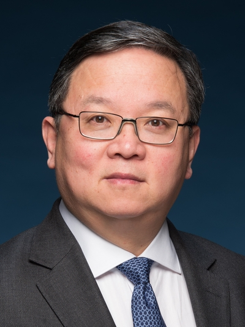
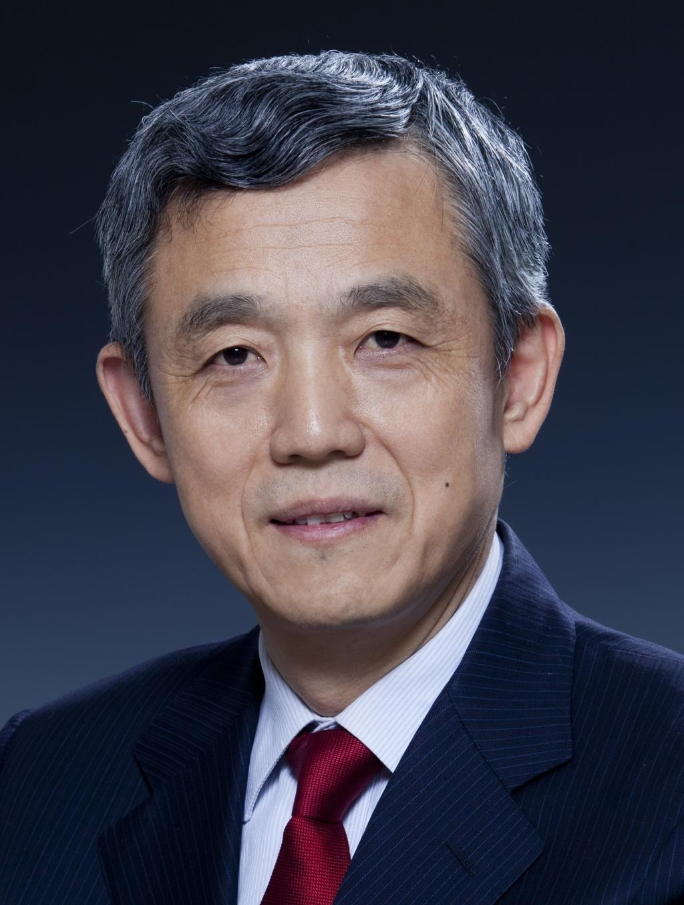
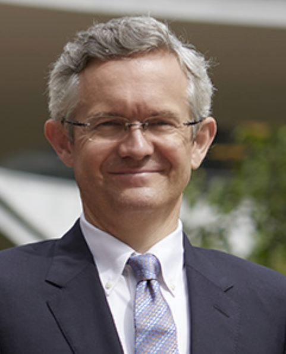
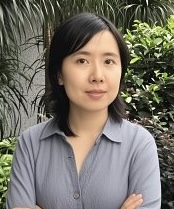
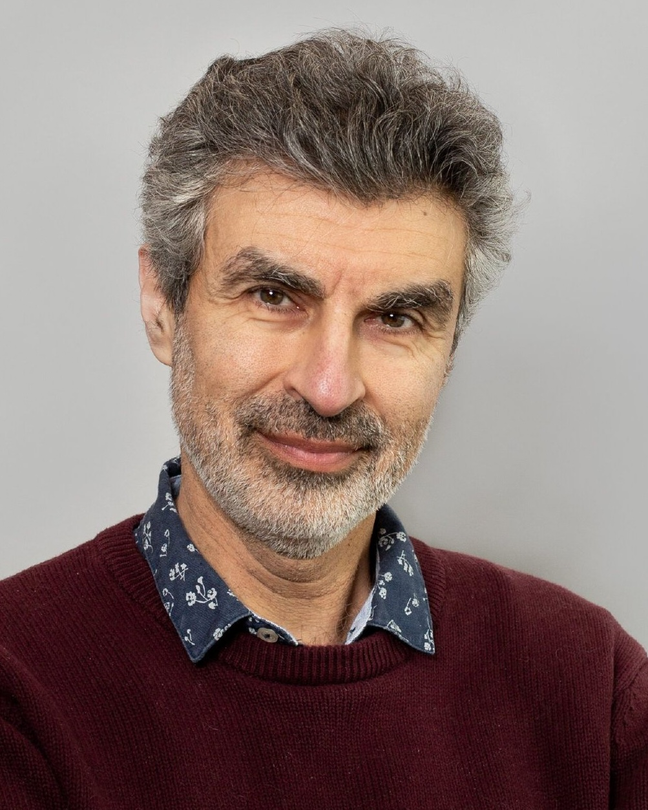
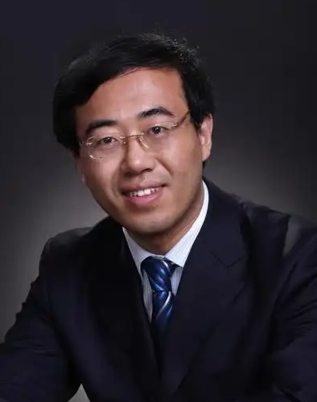
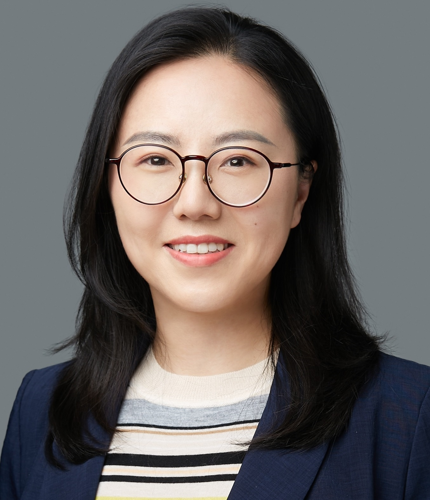

Prof. Yike Guo 郭毅可 教授
Chief Vice-President of HKUST
香港科技大学首席副校长
He has a leading voice in AI innovation and interdisciplinary governance initiatives. 在AI创新与跨学科治理领域具有持续领导力。


He has a leading voice in AI innovation and interdisciplinary governance initiatives. 在AI创新与跨学科治理领域具有持续领导力。

He serves as a key think tank figure in shaping the global AI governance framework. 在全球AI治理框架构建方面发挥关键智库作用。

Expert on international law and AI governance architecture, focusing on comparative legal frameworks. 国际法与AI治理架构专家，重点关注比较法框架与制度衔接。

Director of MIRC, focusing on interdisciplinary research spanning global communication, computational social science, and AI governance. MIRC主任，专注于全球传播、计算社会科学与AI治理的交叉研究。
Winner of the IEEE VGTC Visualization Achievement Award and an internationally recognized authority in the fields of human-computer interaction and data visualization. IEEE VGTC可视化成就奖得主，人机交互与数据可视化领域的国际权威。

Turing Award winner and a pioneer in deep learning, contributing frontier perspectives on model safety and risk governance. 图灵奖得主，深度学习先驱，致力于分享模型安全与风险治理的前沿观点。

Professor at the School of Public Administration, an expert in AI governance and innovation policy, who has been deeply involved in the formulation of national AI policies. 公共管理学院教授，AI治理与创新政策专家，深度参与国家AI政策制定。

Director of the International Affairs Office, Tsinghua University. He boasts extensive experience in advancing international cooperation and multilateral dialogue on AI governance. 清华大学国际处处长，在推动AI治理国际合作与多边对话方面经验丰富。
Her research spans large language models, computational social science, and AI governance, underpinned by a solid interdisciplinary academic background. 其研究横跨大语言模型、计算社会科学与AI治理，具备深厚的跨学科背景。